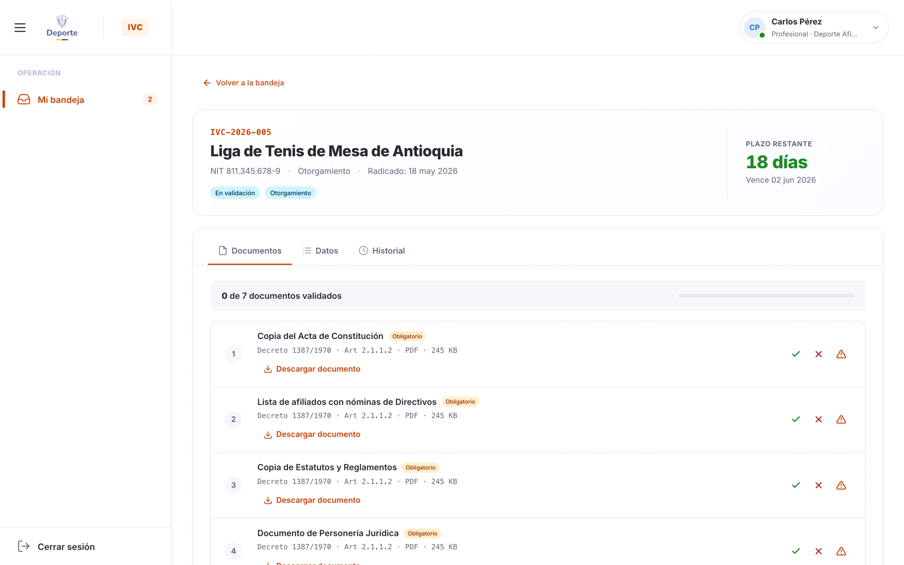
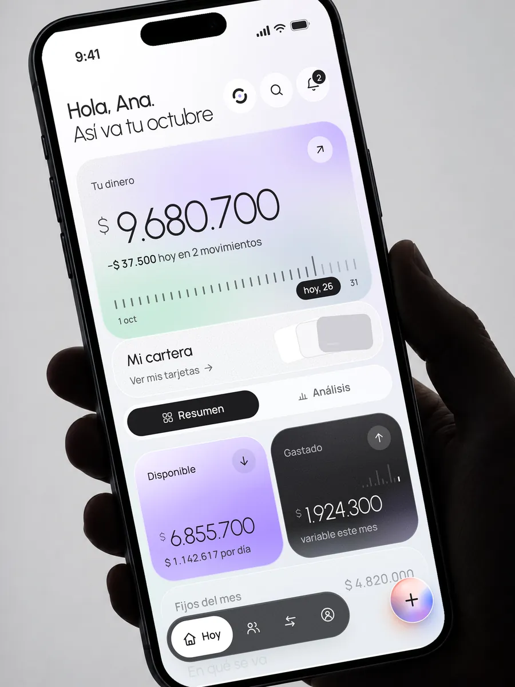
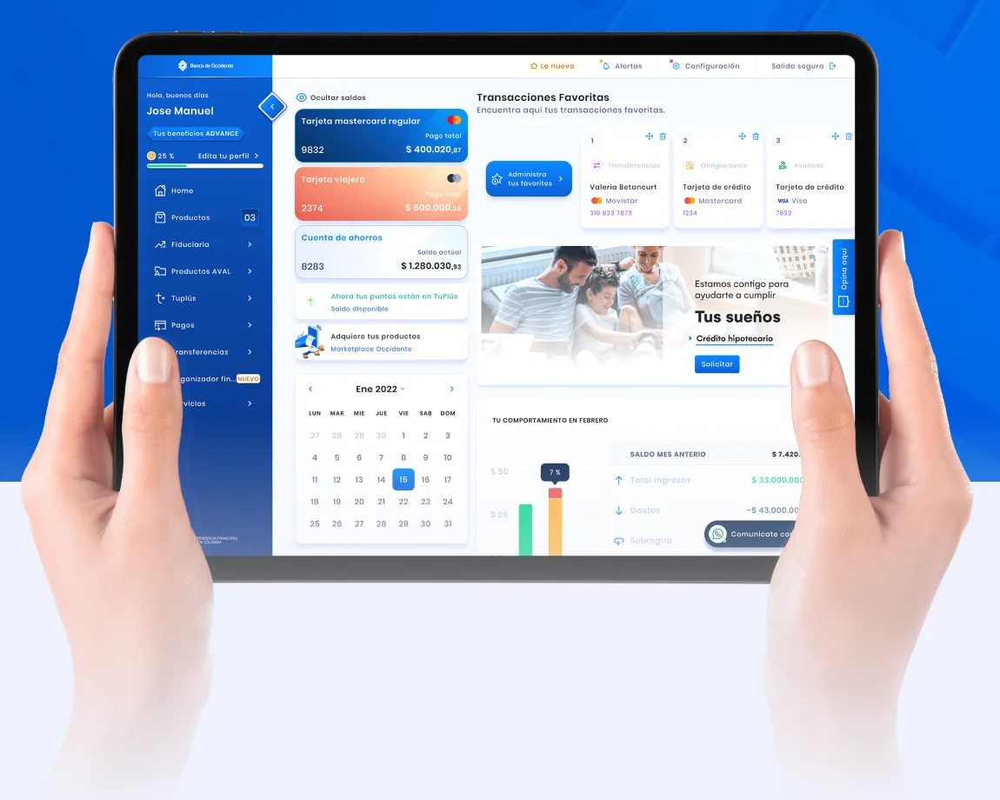
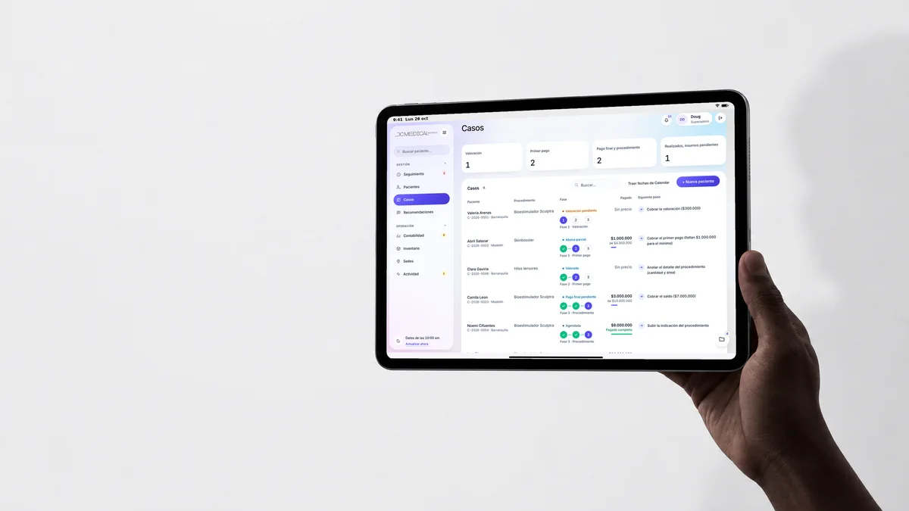
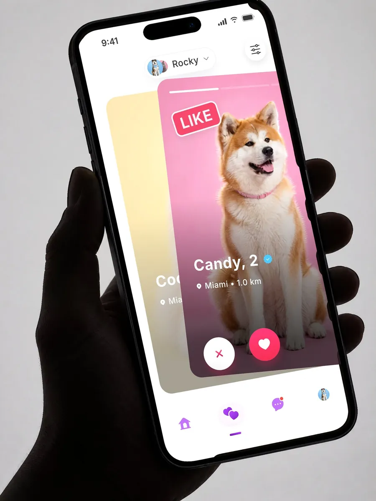
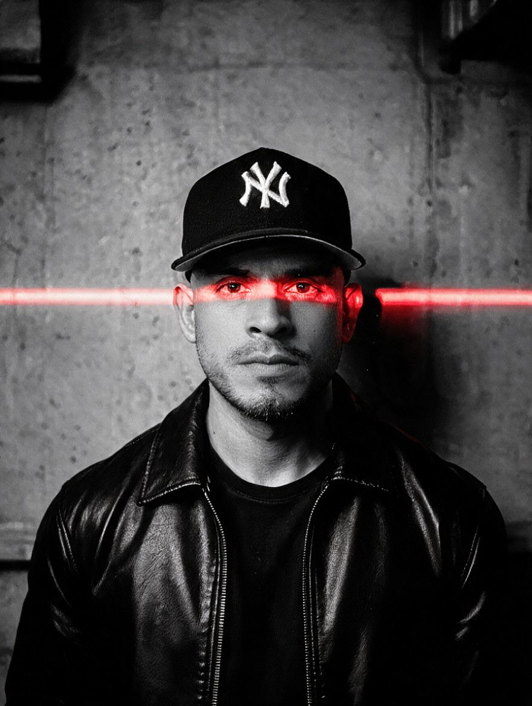

Doug VargasDirijo el producto. Después, lo construyo.
Head of Product · Senior Product Designer (UX/UI) · Design Engineer
Hoy, Naowee. Antes, Andes: el sistema de diseño de Mercadolibre en 18 países.

Ahora · Head of Product
Naowee
Los 30 trámites del deporte colombiano, fuera de Word.
130 o más pantallas en 8 módulos
Mercadolibre · 2024–2026
Andes Design System
Líder técnico del sistema de diseño de Mercadolibre.
NDA · Caso a solicitud
400 o más diseñadores, 2.000 o más ingenieros, 18 países
Head of Product en Naowee
BAQ 14:32Hora local en Barranquilla
Barranquilla, Colombia · UTC-5 · ES / EN

pruebas en verde

Aval Digital Labs · 2018–2024
Banco de Occidente
Un portal más liviano y Velocity, su sistema de diseño.
Más de 12 squads en un solo sistema
“He doesn't just design — he architects how products should feel.”
Producto propio · Socio y constructor
DC Medical
14 días del primer commit a la versión del 2 de octubre

Producto propio · iOS, Android y web
MakeaPet
Más de 680 pruebas automatizadas

Archivo
Más trabajo
1/3
Trayectoria
2010 → hoy: de freelance a Head of Product
- 2010FreelanceGráfico e interfaces
- 2014SmartbizJunior UI
- 2016Ideaware · QrveySenior UX/UI → Lead UI
- 2017GlobantSenior PD
- 2018Aval Digital LabsSenior PD · DS Gatekeeper
- 2024MercadolibreTech Lead · DS
- 2026NaoweeHead of Product
En cifras
Mi trayectoria en cifras
12 años en producto digital, 10 casos publicados, 3 productos propios
En sus palabras
Cita original en inglés
1 de 3

- 01Leer el dominio antes de dibujar
- 02El lenguaje antes que las pantallas
- 03El prototipo es la especificación
- 04Lanzar, y después escuchar
Hablemos
Un rol, una consultoría o el caso de Andes en una llamada: escríbeme.
Lidero producto en Naowee y tomo consultorías puntuales en paralelo.